Reliquary is a collection of relics for Slay the Spire with over 25,000 players! You can find it on the Steam Workshop, and take a gander at the source code on Github. The latest version is 0.5.2 (changelog).
Relics

Aerogel
Common
Upon pickup, choose a card. Whenever you shuffle your draw pile with this card in it, it will end up on top.
Common
Upon pickup, choose a card. Whenever you shuffle your draw pile with this card in it, it will end up on top.
Aluminium Foil
Common
Card rewards tend to be Upgraded and of a higher rarity.
Common
Card rewards tend to be Upgraded and of a higher rarity.

Ball Bearing
Uncommon
Whenever you shuffle your draw pile, shuffle in a Flash of Steel or Finesse, chosen randomly.
Uncommon
Whenever you shuffle your draw pile, shuffle in a Flash of Steel or Finesse, chosen randomly.
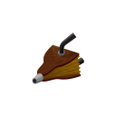
Bellows
Rare · Ironclad
Every 5 times you Exhaust a card, shuffle a card from your exhaust pile into your draw pile.
Rare · Ironclad
Every 5 times you Exhaust a card, shuffle a card from your exhaust pile into your draw pile.
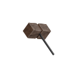
Big Hammer
Boss · Ironclad
You may upgrade Red cards a second time. Upon pickup, Upgrade an Upgraded card.
Boss · Ironclad
You may upgrade Red cards a second time. Upon pickup, Upgrade an Upgraded card.
Blood Sugar
Uncommon
Whenever you enter a room, heal 7 HP, then decrease that number by 1. Rest to reset it to 7.
Uncommon
Whenever you enter a room, heal 7 HP, then decrease that number by 1. Rest to reset it to 7.

Boiling Flask
Uncommon
At the start of each combat, if your potion slots are full, choose a Vapor card and add it into your hand.
(Vapors are cards with minor effects derived from your potions. They Retain and Exhaust.)
Uncommon
At the start of each combat, if your potion slots are full, choose a Vapor card and add it into your hand.
(Vapors are cards with minor effects derived from your potions. They Retain and Exhaust.)

Bookmark
Shop
At the start of each combat, draw an extra card for each Innate card in your deck.
Shop
At the start of each combat, draw an extra card for each Innate card in your deck.

Boomerang
Common
Put the fourth card you play each turn on top of your draw pile.
Common
Put the fourth card you play each turn on top of your draw pile.
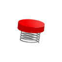
Bouncer
Shop · Silent
Upon pickup, choose a card. It becomes Unplayable. If it's discarded from your hand, play it.
Shop · Silent
Upon pickup, choose a card. It becomes Unplayable. If it's discarded from your hand, play it.

Broken Clock
Shop
Each combat starts with two player turns, then two enemy turns.
Shop
Each combat starts with two player turns, then two enemy turns.

Buckler
Common
The next 2 times you play an upgradeable card that's in your deck, Upgrade it permanently.
Common
The next 2 times you play an upgradeable card that's in your deck, Upgrade it permanently.
Citrus Reamer
Shop
The first time each turn you have 10 cards in hand, gain .
.
Shop
The first time each turn you have 10 cards in hand, gain
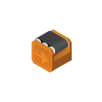
Conveyor
Rare · Defect
At the start of your turn, Channel a type of Orb of which you have 3 or more Channeled.
Rare · Defect
At the start of your turn, Channel a type of Orb of which you have 3 or more Channeled.
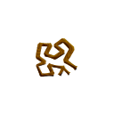
Craggleroot
Boss
Gain at the start of your turn. The first card you draw each turn costs 1 more this combat until played.
at the start of your turn. The first card you draw each turn costs 1 more this combat until played.
Boss
Gain
Crucible
Common
Whenever you remove an Upgraded card from your deck, Upgrade 2 random cards in your deck.
Common
Whenever you remove an Upgraded card from your deck, Upgrade 2 random cards in your deck.
Crusader's Map
Shop
Points the way to a fabled font of immortality.
(You have a 33% chance to get the Holy Grail as a chest or elite relic.)
Shop
Points the way to a fabled font of immortality.
(You have a 33% chance to get the Holy Grail as a chest or elite relic.)
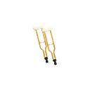
Crutches
Common · Ironclad
Whenever you get a Status, enemies lose 1 Strength during their next turn.
Common · Ironclad
Whenever you get a Status, enemies lose 1 Strength during their next turn.
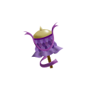
Dhvaja
Rare · Watcher
Whenever you enter Divinity, Divinity's damage multiplier increases by 1 this combat.
Rare · Watcher
Whenever you enter Divinity, Divinity's damage multiplier increases by 1 this combat.
Elizabethan Collar
Common
Upon pickup, your Curses become Injuries. All Curses you obtain become Injuries.
Common
Upon pickup, your Curses become Injuries. All Curses you obtain become Injuries.

Ember
Boss
Gain at the start of your turn. Take 2 damage for each Energy beyond the third you spend each turn.
at the start of your turn. Take 2 damage for each Energy beyond the third you spend each turn.
Boss
Gain
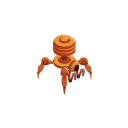
EXA
Rare · Defect
At the start of your turn, if you have no Lightning, Frost, or Dark Orb Channeled, Channel an Orb of a random missing type.
Rare · Defect
At the start of your turn, if you have no Lightning, Frost, or Dark Orb Channeled, Channel an Orb of a random missing type.

Expired Coupon
Common
When you reach 70 or more total unblocked damage dealt in a combat, deal 10 damage to ALL enemies.
Common
When you reach 70 or more total unblocked damage dealt in a combat, deal 10 damage to ALL enemies.

Feather Duster
Uncommon
Upon pickup, remove any number of cards from your deck except Strike, Defend, and Curse cards.
Uncommon
Upon pickup, remove any number of cards from your deck except Strike, Defend, and Curse cards.
Ferry Pass
Common
When you play every unique playable card in your deck in one combat, lose this and add a Rare relic to that combat's reward.
(Only appears with 12 or more unique cards in your deck. Upgraded versions of a card count as the same unique card.)
Common
When you play every unique playable card in your deck in one combat, lose this and add a Rare relic to that combat's reward.
(Only appears with 12 or more unique cards in your deck. Upgraded versions of a card count as the same unique card.)
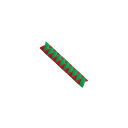
Finger Trap
Shop
Prevent the first 13 HP you would lose during your turn each combat.
Shop
Prevent the first 13 HP you would lose during your turn each combat.

Firecrackers
Uncommon
Overkill damage is dealt to a random enemy.
Uncommon
Overkill damage is dealt to a random enemy.
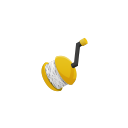
Fishing Reel
Rare
Each turn, you can pay for 1 card with next turn's Energy.
Rare
Each turn, you can pay for 1 card with next turn's Energy.
Free Samples
Boss
Gain at the start of your turn. Whenever an enemy deals unblocked attack damage to you, it gains 1 Buffer if it has none.
at the start of your turn. Whenever an enemy deals unblocked attack damage to you, it gains 1 Buffer if it has none.
Boss
Gain
Gummy Vitamins
Uncommon
Once per turn, you may draw a card, then shuffle a Slimed into your draw pile.
(Right click to activate.)
Uncommon
Once per turn, you may draw a card, then shuffle a Slimed into your draw pile.
(Right click to activate.)
Hardlight
Uncommon · Ironclad
When your HP falls to 10 or less for the first time, permanently gain 2 Strength.
Uncommon · Ironclad
When your HP falls to 10 or less for the first time, permanently gain 2 Strength.
The Holy Grail
Special
The first time you would die each combat, die next turn instead.
(Can only be found with the Crusader's Map.)
Special
The first time you would die each combat, die next turn instead.
(Can only be found with the Crusader's Map.)

Hot Poker
Uncommon
Whenever you draw a card during your turn, deal damage equal to its cost to a random enemy.
(This doesn't include the cards you draw at the start of your turn.)
Uncommon
Whenever you draw a card during your turn, deal damage equal to its cost to a random enemy.
(This doesn't include the cards you draw at the start of your turn.)
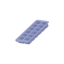
Ice Cube Tray
Uncommon
For every 4 cards you add to your deck, you may remove a card from your deck.
Uncommon
For every 4 cards you add to your deck, you may remove a card from your deck.

Iridium Chain
Uncommon
Whenever you play a Power card, put an Ethereal copy into your hand that costs 1 more.
Uncommon
Whenever you play a Power card, put an Ethereal copy into your hand that costs 1 more.

Ivory Trinket
Common · Watcher
Every 5th time you Retain a Miracle, add a Miracle into your hand.
Common · Watcher
Every 5th time you Retain a Miracle, add a Miracle into your hand.

Jackalope Antler
Uncommon
Whenever an enemy dies, refund the Energy cost of the last card you played.
Uncommon
Whenever an enemy dies, refund the Energy cost of the last card you played.

Kill Pill
Rare · Silent
The first time you apply Poison to each enemy each turn, it triggers immediately.
Rare · Silent
The first time you apply Poison to each enemy each turn, it triggers immediately.

Kinked Spring
Boss
Gain
 at the start of your turn. Your discard pile only shuffles into your draw pile when you end your turn with an empty draw pile.
at the start of your turn. Your discard pile only shuffles into your draw pile when you end your turn with an empty draw pile.
Boss
Gain
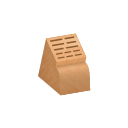
Knife Block
Rare · Silent
Whenever you create Shivs, create an additional one.
Rare · Silent
Whenever you create Shivs, create an additional one.

Knoch
Common
Enemies with 25% or less HP are Weak.
Common
Enemies with 25% or less HP are Weak.
Lead Dart
Uncommon
The first time each combat you have 10 cards in hand, gain 3 Strength.
Uncommon
The first time each combat you have 10 cards in hand, gain 3 Strength.

Love-Emitting Diode
Uncommon · Defect
Positive Focus doubly affects your rightmost Orb.
Uncommon · Defect
Positive Focus doubly affects your rightmost Orb.

Medicine Ball
Uncommon · Ironclad
You have additional Strength equal to the highest Strength among enemies (0 minimum).
Uncommon · Ironclad
You have additional Strength equal to the highest Strength among enemies (0 minimum).

Mudwin's Cradle
Uncommon · Watcher
Entering Divinity requires 3 less Mantra.
Uncommon · Watcher
Entering Divinity requires 3 less Mantra.
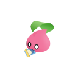
New Friend
Uncommon
Strikes and Defends Exhaust 50% of the time.
Uncommon
Strikes and Defends Exhaust 50% of the time.

Ouija Board
Rare
Once per turn, pay the cost of a card in your discard pile plus 1 to play it and shuffle it into your draw pile.
(Right click to activate.)
Rare
Once per turn, pay the cost of a card in your discard pile plus 1 to play it and shuffle it into your draw pile.
(Right click to activate.)
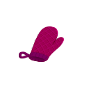
Oven Mitt
Shop
Prevent the next 6 times you would lose HP.
Shop
Prevent the next 6 times you would lose HP.
Paper Snowflake
Uncommon
The newest card in your deck that costs 1 or more costs 1 less.
Uncommon
The newest card in your deck that costs 1 or more costs 1 less.

Party Balloon
Common
Power cards start each combat in the top half of your draw pile.
Common
Power cards start each combat in the top half of your draw pile.
Peacock Shield
Uncommon · Watcher
Whenever you enter Wrath, gain 2 Block, then double your Block.
Uncommon · Watcher
Whenever you enter Wrath, gain 2 Block, then double your Block.
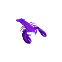
Plasma Lobster
Uncommon
Increases your attack damage by 2 while you have Block.
Uncommon
Increases your attack damage by 2 while you have Block.

Porcupine Quills
Common
Whenever you receive 12 or more unblocked damage, deal that much damage back.
Common
Whenever you receive 12 or more unblocked damage, deal that much damage back.
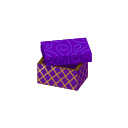
Prayer Box
Uncommon · Watcher
You keep your Mantra between combats.
Uncommon · Watcher
You keep your Mantra between combats.
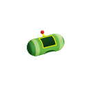
Princely Helmet
Uncommon
Double the first X Block you gain each combat, where X is 8 times the current Act.
Uncommon
Double the first X Block you gain each combat, where X is 8 times the current Act.
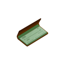
Promissory Notes
Common
Whenever you receive a debuff from an enemy, your first Attack against that enemy next turn deals 5 additional damage.
Common
Whenever you receive a debuff from an enemy, your first Attack against that enemy next turn deals 5 additional damage.

Purple-Tinged Leaf
Uncommon
Upon pickup, choose an Attack. Whenever you play this card, heal 1 HP.
Uncommon
Upon pickup, choose an Attack. Whenever you play this card, heal 1 HP.
Pushpin
Rare · Silent
The cards in your opening hand Retain for the rest of combat.
Rare · Silent
The cards in your opening hand Retain for the rest of combat.

Quartz Cube
Uncommon
At the start of each combat with 3 or more enemies, apply 2 Stunned and 2 Invincible to one.
Uncommon
At the start of each combat with 3 or more enemies, apply 2 Stunned and 2 Invincible to one.
Rabbit Ears
Boss · Defect
You may upgrade Blue cards a second time. Upon pickup, Upgrade an Upgraded card.
Boss · Defect
You may upgrade Blue cards a second time. Upon pickup, Upgrade an Upgraded card.

Radioactive Pellet
Common · Silent
Poison doesn't decrement.
Common · Silent
Poison doesn't decrement.
Rattle Coin
Shop
Double the first unblocked attack damage dealt to you and ALL enemies each combat.
Shop
Double the first unblocked attack damage dealt to you and ALL enemies each combat.

Red Cape
Boss
Gain at the start of your turn. Whenever you Attack a single enemy, other enemies can't be attacked until it dies.
at the start of your turn. Whenever you Attack a single enemy, other enemies can't be attacked until it dies.
Boss
Gain

Red Paperclip
Boss
Gain at the start of your turn. Replaces 2 random Common or Uncommon relics.
at the start of your turn. Replaces 2 random Common or Uncommon relics.
Boss
Gain

Rose-Tinted Glasses
Common
The first 2 times you draw a Status each combat, Exhaust it and draw a card.
Common
The first 2 times you draw a Status each combat, Exhaust it and draw a card.

Rosewood Lute
Common
Whenever you block damage exactly, gain next turn.
next turn.
Common
Whenever you block damage exactly, gain
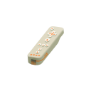
Runic Remote
Uncommon
Whenever you win a combat without taking damage, you may add a card corresponding to a defeated enemy into your deck.
(These cards can be of any color.)
Uncommon
Whenever you win a combat without taking damage, you may add a card corresponding to a defeated enemy into your deck.
(These cards can be of any color.)
Rustam's Pendant
Boss
Gain at the start of your turn. Has a different drawback for each character.
at the start of your turn. Has a different drawback for each character.
(-1 Strength on Ironclad, -1 Dexterity on Silent, -1 Focus on Defect, and -3 Devotion on Watcher, entering Atonement stance at -10 Mantra.)
Boss
Gain
(-1 Strength on Ironclad, -1 Dexterity on Silent, -1 Focus on Defect, and -3 Devotion on Watcher, entering Atonement stance at -10 Mantra.)

Sculpting Steel
Uncommon
Upon pickup, becomes a copy of a random Common, Uncommon, Rare, or Shop relic you already have.
(Chooses from among compatible relics.)
Uncommon
Upon pickup, becomes a copy of a random Common, Uncommon, Rare, or Shop relic you already have.
(Chooses from among compatible relics.)

Sharkskin Sheath
Common
Whenever you end your turn with no cards in hand, draw a card next turn.
Common
Whenever you end your turn with no cards in hand, draw a card next turn.
Sheep's Eye Marble
Rare
The first time you play two copies of the same card in a row each turn, play it again.
Rare
The first time you play two copies of the same card in a row each turn, play it again.

Short Fuse
Common · Defect
Your Lightning Orbs target the enemy with the least HP.
Common · Defect
Your Lightning Orbs target the enemy with the least HP.
Short Straw
Boss
Gain at the start of your turn and choose a random card in your hand. If it's still in your hand at the end of the turn, you lose 10 HP.
at the start of your turn and choose a random card in your hand. If it's still in your hand at the end of the turn, you lose 10 HP.
Boss
Gain
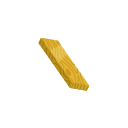
Sideboard
Uncommon
Upon pickup, gain 100 Gold. Chosen card rewards go into a separate pile. You can move cards from that pile to your deck between combats.
Uncommon
Upon pickup, gain 100 Gold. Chosen card rewards go into a separate pile. You can move cards from that pile to your deck between combats.

Silk Glove
Common
Whenever you would discard a single card at the end of your turn, Retain it.
Common
Whenever you would discard a single card at the end of your turn, Retain it.
Skeleton Key
Boss · Silent
You may upgrade Green cards a second time. Upon pickup, Upgrade an Upgraded card.
Boss · Silent
You may upgrade Green cards a second time. Upon pickup, Upgrade an Upgraded card.
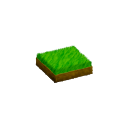
Sod
Uncommon
Put an Upgraded copy of every 8th unupgraded card you play into your hand.
(Doesn't copy Curse or Status cards.)
Uncommon
Put an Upgraded copy of every 8th unupgraded card you play into your hand.
(Doesn't copy Curse or Status cards.)
Solitaire
Boss · Watcher
You may upgrade Purple cards a second time. Upon pickup, Upgrade an Upgraded card.
Boss · Watcher
You may upgrade Purple cards a second time. Upon pickup, Upgrade an Upgraded card.
Soularoid
Shop
Whenever you play a non-Status card with a different name than any card in your deck, add a copy of it to your deck.
Shop
Whenever you play a non-Status card with a different name than any card in your deck, add a copy of it to your deck.
Spinner
Common
Whenever you play a card of a different type than the previous that turn, gain 1 Block.
Common
Whenever you play a card of a different type than the previous that turn, gain 1 Block.
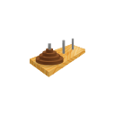
Spire of Hannoy
Uncommon
Weak and Vulnerable are 10% more effective against enemies for every stack past the 1st (max 30%).
Uncommon
Weak and Vulnerable are 10% more effective against enemies for every stack past the 1st (max 30%).
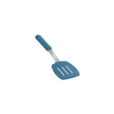
Splatula
Uncommon
Whenever you Attack an enemy for half or more of its Max HP, set its HP to 0.
Uncommon
Whenever you Attack an enemy for half or more of its Max HP, set its HP to 0.

Stiletto
Common
Enemies gain 50% less Block.
Common
Enemies gain 50% less Block.
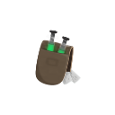
Stimpack
Common
The first time your HP drops to 50% or below each combat, your Attacks deal double damage for 1 turn.
Common
The first time your HP drops to 50% or below each combat, your Attacks deal double damage for 1 turn.

Tam-Tam
Shop · Ironclad
Whenever you start your turn with Block, you gain 2 Strength and ALL enemies gain 1 Strength.
Shop · Ironclad
Whenever you start your turn with Block, you gain 2 Strength and ALL enemies gain 1 Strength.
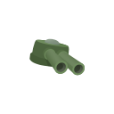
Tank Top
Uncommon
Whenever you Attack the enemy with the most HP, if there are 2 or more enemies, deal 4 damage to the front enemy.
Uncommon
Whenever you Attack the enemy with the most HP, if there are 2 or more enemies, deal 4 damage to the front enemy.

Tattered Rug
Common
You can sell potions to the Merchant.
Common
You can sell potions to the Merchant.
Thinking Cap
Uncommon
At the start of each combat, draw the second-to-last card you played last combat.
(Only cards in your deck count.)
Uncommon
At the start of each combat, draw the second-to-last card you played last combat.
(Only cards in your deck count.)
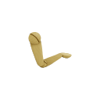
Third Arm
Boss
Start each combat with a cost 0 Power in your draw pile that gives you every turn.
every turn.
Boss
Start each combat with a cost 0 Power in your draw pile that gives you
Thumb Drive
Common · Defect
At the start of each combat, Channel 1 Data.
Common · Defect
At the start of each combat, Channel 1 Data.
Toy Rocket
Uncommon
The first time you play a cost 3, cost 2, and cost 1 card in a row each combat, add a powerful cost 0 Attack into your hand.
Uncommon
The first time you play a cost 3, cost 2, and cost 1 card in a row each combat, add a powerful cost 0 Attack into your hand.
Traffic Cone
Uncommon
The first time an enemy does something other than attack, it loses 2 Strength.
Uncommon
The first time an enemy does something other than attack, it loses 2 Strength.
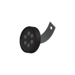
Training Wheel
Common
Whenever you draw a hand with no Attacks or no Skills, put a random card of that type from your draw pile into your hand.
Common
Whenever you draw a hand with no Attacks or no Skills, put a random card of that type from your draw pile into your hand.

Trident Head
Uncommon
The first card you play on a single enemy each combat is copied to all other enemies.
Uncommon
The first card you play on a single enemy each combat is copied to all other enemies.

Tuning Fork
Common
Whenever you break an enemy's Block exactly, deal 10 damage to it.
Common
Whenever you break an enemy's Block exactly, deal 10 damage to it.
Twin Pearls
Rare
You start each odd-numbered turn with Pearlescence in your hand.
(Pearlescence is a card that copies the last card played in a turn.)
Rare
You start each odd-numbered turn with Pearlescence in your hand.
(Pearlescence is a card that copies the last card played in a turn.)
Underdog Bone
Uncommon
Whenever you play an unupgraded card, if there's an Upgraded copy in your draw pile, put it into your hand.
Uncommon
Whenever you play an unupgraded card, if there's an Upgraded copy in your draw pile, put it into your hand.
Vitrine
Uncommon
Upon pickup, remove a card from your deck. You may choose to shuffle it into your draw pile any time during combat.
Uncommon
Upon pickup, remove a card from your deck. You may choose to shuffle it into your draw pile any time during combat.
Weak Tea
Common
The first 2 Colorless cards you play each combat cost less.
less.
Common
The first 2 Colorless cards you play each combat cost
Witchy Dice
Shop
At the start of each combat, play a random card of any color.
Shop
At the start of each combat, play a random card of any color.

Writ of Mandamus
Boss
Gain at the start of your turn. At the end of your turn, you lose 5 Block.
at the start of your turn. At the end of your turn, you lose 5 Block.
Boss
Gain
Credits
- design, code, and art by me
- additional design by Grace Ku, Wilson Chung, and 旅渚
- Simplified Chinese translation by 旅渚
- Russian translation by Rustam Eyniyev
- Japanese translation by wii
- Korean translation by OWATANKS
- to the developers of ModTheSpire, BaseMod, and StSLib, especially kiooeht
- to Slay the Spire Discord members Alchyr, Gk, Jobby, Raz, squeeb, and vex for technical help
- to Dave for extensive balance notes
- and to the many people who reported bugs and gave balance and design feedback!
Changelog
- 0.5.2 (4/26/2023)
- Bellows: Uncommon ￫ Rare
- Big Hammer: Berserk++: ALL enemies are also Vulnerable next turn
- Craggleroot: cost increase removed when card is played
- Crusader's Map: 25% chance ￫ 33% chance
- Ember: no longer counts autoplayed cards
- Finger Trap: only prevents the first 13 player-turn damage each combat
- Free Samples: gives enemies 1 Buffer instead of 1 Intangible
- Kinked Spring:
￫
- Love-Emitting Diode: 3x ￫ 2x
- Peacock Shield: gain 2 Block before doubling
- Promissory Notes: only stacks up to 100
- Quartz Cube: Exploders' Explosive power doesn't decrement while stunned
- Red Cape: only restricts Attacks
- Runic Remote: formerly unupgraded cards have a 50% chance to be Upgraded
- Sheep's Eye Marble: triggers once per turn
- Sideboard: 100 Gold on pickup
- Short Fuse: Uncommon ￫ Common
- Short Straw: no longer picks Unplayable cards
- Skeleton Key: Crippling Cloud++ applies 7 ￫ 9 Poison
- Skeleton Key: Deadly Poison++ applies 8 ￫ 9 Poison
- Skeleton Key: Skewer++ buff at X=5+ ￫ X=4+
- Tam-Tam: player Strength gain 1 ￫ 2
- Tank Top: 3 damage ￫ 4 damage
- Toy Rocket: Blast Off deals 20 damage ￫ 25 damage
- Twin Pearls: get Pearlescence on odd-numbered turns only
- 0.5.1 (3/18/2023)
- Ferry Pass: gaining cards during combat no longer resets progress
- Stimpack: fixed a crash when becoming bloodied outside of combat
- Twin Pearls: Pearlescence can no longer be retained
- Twin Pearls: removed from Downfall's Automaton character pool
- Witchy Dice: Uncommon ￫ Shop
- 0.5 (9/22/2022)
- added Blood Sugar, Bouncer, EXA, Free Samples, Hardlight, Oven Mitt, Peacock Shield, Plasma Lobster, Promissory Notes, Rattle Coin, Sheep's Eye Marble, Short Straw, Soularoid, Splatula, Tank Top, Toy Rocket, Traffic Cone, Twin Pearls, Underdog Bone, and Witchy Dice
- Korean translation by OWATANKS!
- Boiling Flask: fixed soft lock when player has no potion slots
- Boiling Flask: doesn't spawn late in a run when the player has many empty potion slots
- Jackalope Antler: fixed failure to trigger on certain damage sources
- Knoch: fixed mod interaction crash
- Party Balloon: uses seeded random
- Rabbit Ears: Echo Form++ now only copies the last card played each turn
- Tattered Rug: fixed incompatibility with Downfall
- 0.4.1 (3/28/2022)
- fixed a bug that affected Anger and Anger+ damage calculation
- Boiling Flask: added cross-mod support for Wide Potions
- Crucible: fixed crash with Peace Pipe
- Crusader's Map: only spawns in Act 2
- Ember: no longer triggers on Curse and Status cards
- Ferry Pass: no longer spawns in Act 4
- Fishing Reel: spends all available Energy this turn before spending next turn's
- Kinked Spring: no longer spawns on modded characters
- Paper Snowflake: fixed bad interaction with Upgrades
- Quartz Cube: fixed interaction with Bag of Marbles
- Rabbit Ears: Darkness++ text fix
- Rabbit Ears: Heatsinks++ triggers on-draw effects properly
- Runic Remote: tweaked enemy/card pairings
- Runic Remote: drops persist through save/load
- Skeleton Key: fixed canUpgrade check
- Skeleton Key: fixed Infinite Blades++
- Sod: skips over copying Curse and Status cards
- 0.4 (7/29/2021)
- added Aluminium Foil, Bellows, Crucible, Crusader's Map, Elizabethan Collar, Fishing Reel, the Holy Grail, Ice Cube Tray, Knife Block, Lead Dart, Paper Snowflake, Prayer Box, Rabbit Ears, Skeleton Key, Spire of Hannoy, Stimpack, Thumb Drive, and Training Wheel
- fixed the Big Hammer/Solitaire infinite upgrading bug (thanks jbcall!)
- second-Upgrade relics only spawn if you have an Upgraded class card
- Big Hammer: aligned Infernal Blade++ with Distraction++ and White Noise++
- Bookmark: checks for newly Upgraded cards each combat
- Crutches: Ironclad ￫ Shared
- Dhvaja: triggers upon entering Divinity rather than upon exiting
- Expired Coupon: now has no effect outside of combat
- Knoch: fixed interaction with debuff-immune modded monsters
- Iridium Chain: respects free-until-played effects like Forethought and Setup
- Mudwin's Cradle: now a flat Mantra requirement reduction
- Ouija Board: removed hardcoded string
- Runic Remote: Slime Boss triggers on split
- Runic Remote: drops random scaled colorless cards for unknown enemies
- Runic Remote: added support for Gensokyo monsters and cards (thanks, wii!)
- Sculpting Steel: no longer copies Orrery
- Spinner: displays type of previous card
- Tattered Rug: stopped infinite combo with The Courier
- 0.3.1 (4/3/2021)
- added Runic Remote and Thinking Cap
- Japanese translation by wii!
- Big Hammer: upon pickup, Upgrade an Upgraded card
- Big Hammer: fixed Limit Break++ crash
- Big Hammer: added missing Rupture++
- Big Hammer: fixed True Grit++ UI bug
- Boiling Flask: Explosive and Fire vapor damage now affected by modifiers
- Craggleroot: skips over X cards
- Feather Duster: no longer spawns in shops
- Feather Duster: fixed unintended confirmations
- Ferry Pass: becomes disabled on activation instead of getting removed
- Finger Trap: no longer prevents damage outside of combat
- Iridium Chain: copies are unaffected by Mummified Hand
- Porcupine Quills: no longer triggers on self damage
- Quartz Cube: fixed crash interaction with Artifact
- Rustam's Pendant: fixed Mantra getting stuck at -1
- Rustam's Pendant: fixed Devotion stacking bug
- Sod: flashes when about to trigger
- Solitaire: upon pickup, Upgrade an Upgraded card
- Solitaire: fixed Battle Hymn++
- Solitaire: Blasphemy++ no longer stacks
- Solitaire: Conjure Blade++ typo
- Tattered Rug: no longer spawns in shops
- Trident Head: fixed for "self and enemy" targeting cards
- replaced missized Strong Vapor image
- 0.3 (2/15/2021)
- added Big Hammer, Citrus Reamer, Finger Trap, Gummy Vitamins, Rustam's Pendant, Sod, Spinner, Third Arm, and Vitrine
- Feather Duster: only spawns after floor 20
- Ferry Pass: fixed spawning with too few unique cards
- Ferry Pass: fixed requiring Unplayable cards to be played
- Hot Poker: fixed crash with no targets
- Kinked Spring: can no longer be received from Neow with an 11 or 12 card deck
- Sculpting Steel: disallowed nonfunctional relics
- Solitaire: Rare ￫ Boss
- Solitaire: improved Eruption++
- 0.2.2 (2/7/2021)
- Russian translation by Rustam Eyniyev!
- fixed relic image outlines
- Iridium Chain: fixed interactions with Powers that upgrade to remove Ethereal
- Sideboard: prevented breaking on certain screens
- 0.2.1 (2/1/2021)
- added Solitaire
- Ember: damage is dealt after the played card resolves
- Ember: no longer triggers Rupture
- Ouija Board: X-cost cards are played for X - 1
- Ouija Board: no longer works on Unplayable cards
- Red Cape: half-dead enemies that keep buffs (Awakened One) don't taunt
- Red Paperclip, Sculpting Steel: use seeded RNG
- 0.2 (1/31/2021)
- added Conveyor, Craggleroot, Crutches, Dhvaja, Ferry Pass, New Friend, Pushpin, and Sideboard
- Simplified Chinese translation by 旅渚!
- Aerogel: Uncommon ￫ Common
- Expired Coupon: triggers after 80 ￫ 70 damage
- Kinked Spring: fixed interaction with end-of-turn draw pile events like Study
- Ouija Board: fixed chosen card shuffling into the draw pile for the rest of the combat
- Princely Helmet: 1 doubled Block per floor ￫ 8 per Act
- Princely Helmet: Rare ￫ Uncommon
- Quartz Cube: each combat with 2 or more ￫ 3 or more enemies
- Quartz Cube: fixed weird Intangible AOE behavior by switching back to a variant of Invincible
- Red Cape: Taunt now permits autoplayed cards to target other enemies
- Sculpting Steel: no longer copies Boss and Event relics
- Sharkskin Sheath: removed the Energy condition and effect
- Tam-Tam: 2 Strength for you and 1 for enemies ￫ 1 for everyone
- Weak Tea: first Colorless card ￫ first 2 Colorless cards
- Weak Tea: reduces costForTurn in time to interact with other effects
- fixed Card Library crash bug
- 0.1.2 (1/26/2021)
- added Weak Tea
- Boomerang: first card ￫ fourth card
- Iridium Chain: the added Ethereal now overrides Powers with Retain
- Kill Pill: triggers only once per enemy per turn
- Kinked Spring: fixed interaction with onShuffle effects, including Ball Bearing
- Knoch: fixed not reapplying Weak
- Red Cape: displays message when targeting a non-Taunted enemy, attempted crash fix
- 0.1.1 (1/25/2021)
- added Princely Helmet
- Bookmark: Uncommon ￫ Shop
- Ember: 1 ￫ 2 damage
- Iridium Chain: upgrading created cards (e.g. with Master Reality) no longer resets the cost
- Ivory Trinket: every 10th time ￫ every 5th time
- Kinked Spring: now doesn't shuffle during your draw for turn, closed edge-case loopholes
- Medicine Ball: copies max Strength among enemies, ignoring negative Strength
- Mudwin's Cradle: 2/4/6/8/9 ￫ 3/6 Mantra
- Purple-Tinged Leaf: now works on Attacks only
- Quartz Cube: applies Intangible instead of Invincible
- Red Paperclip: replaces 2 Common or Uncommon relics
- Short Fuse: Rare ￫ Uncommon
- Tam-Tam: Rare ￫ Shop, checks once per turn for leftover block instead of on every attack
- Writ of Mandamus: lose 3 Block ￫ lose 5 Block
- fixed bugs with Boomerang, Medicine Ball, and Red Cape
- improved tooltips and misc strings
- Vapors no longer default to seen
- 0.1 (1/23/2021): Initial release.
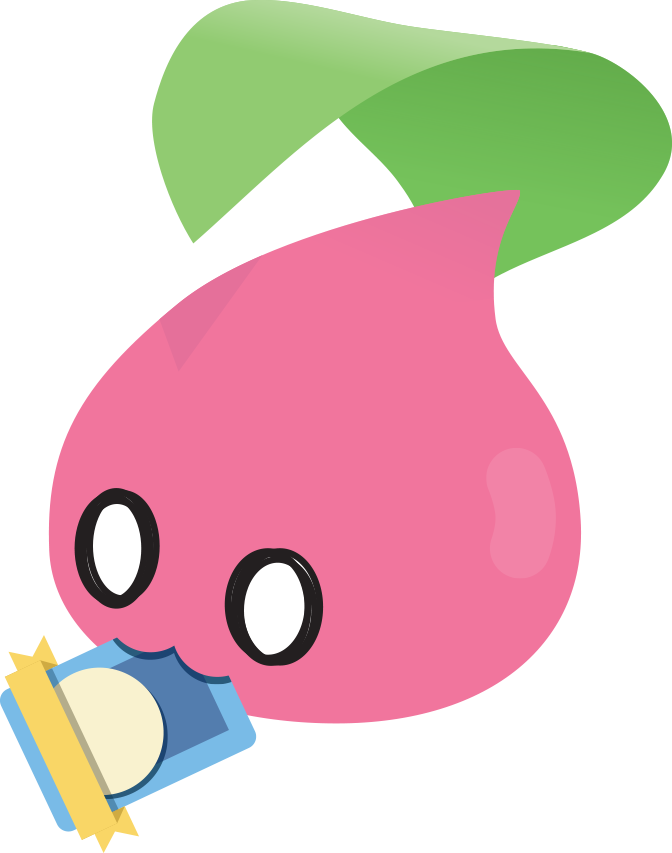